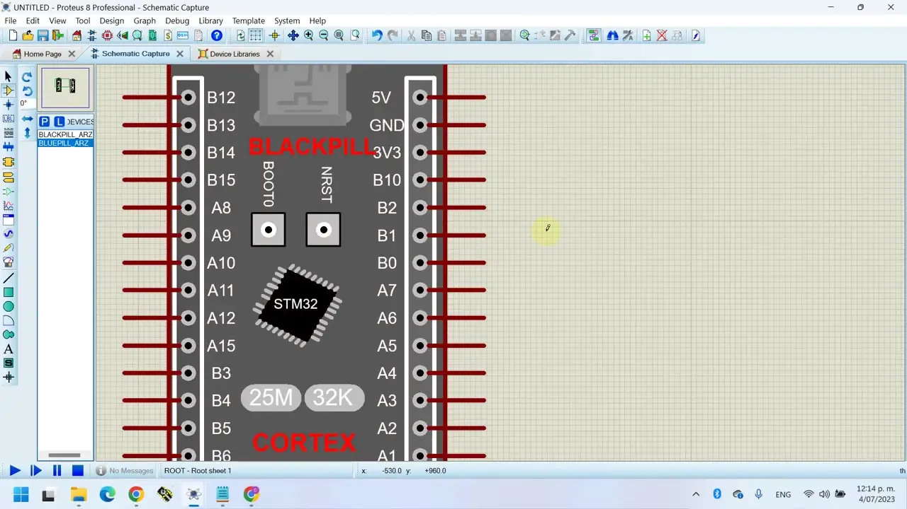

Descarga las librerías desde github.com/alcidesramos/LIBRERIAS_PROTEUS_2026.
Cómo se copian a Proteus está explicado en la clase 7 del curso (Tips de simulación STM32 en Proteus); solo hay que reemplazar los archivos por los nuevos.
Varios me contaron que al cablear mis librerías de Black Pill y Blue Pill en Proteus los cables salían cruzados. En esta actualización cada pin queda con su nombre en el lugar correcto, se incluye la vista 3D y ahora también funciona la parte análoga. Al final se muestra cómo arreglar el error de VDDA en Power Rail Configuration.

Descarga las librerías desde github.com/alcidesramos/LIBRERIAS_PROTEUS_2026.
Cómo se copian a Proteus está explicado en la clase 7 del curso (Tips de simulación STM32 en Proteus); solo hay que reemplazar los archivos por los nuevos.
En Pick Devices escribe ARZ: salen BLACKPILL_ARZ y BLUEPILL_ARZ.
Cada pin del dibujo coincide con la tarjeta real (B12, B13, A8…). Así se cablea sin que los cables se crucen y los esquemas quedan más limpios.
La librería también trae la vista 3D de la tarjeta, como en el video de la clase 7.
Si al simular aparece un error porque no reconoce VDDA, ve a Design → Configure Power Rails….
En el riel de 3.3 V (VCC/VDD) pasa VDDA de la lista de la izquierda (sin conectar) a la de la derecha con Add.
Con eso la simulación del ADC funciona: el LCD y la terminal virtual muestran el código del ADC, el voltaje y la temperatura.